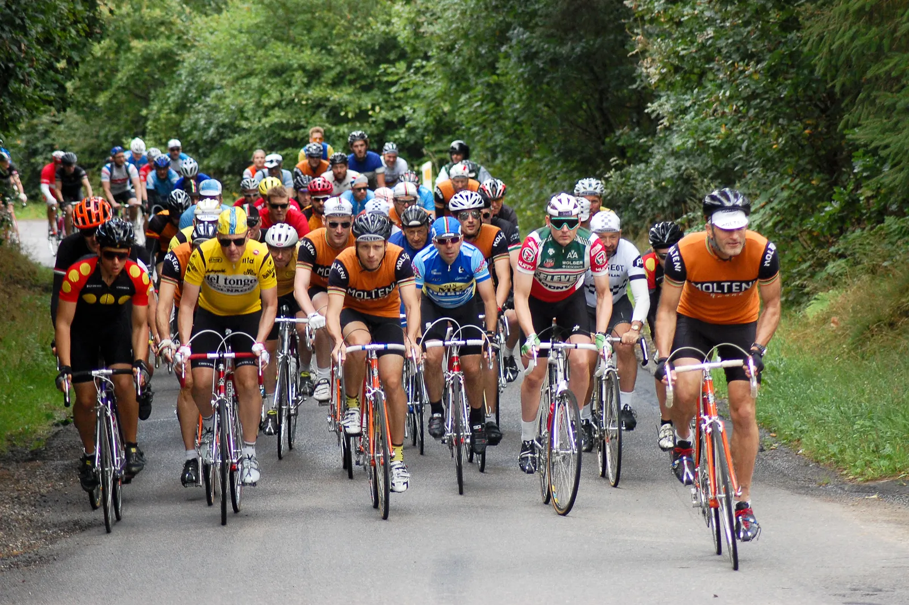
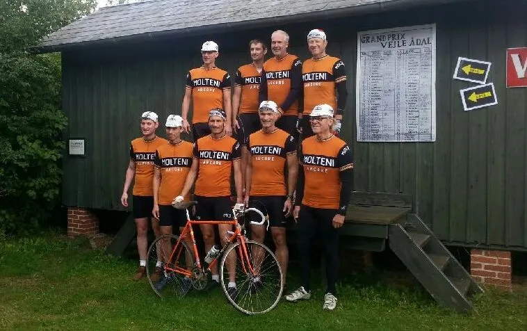
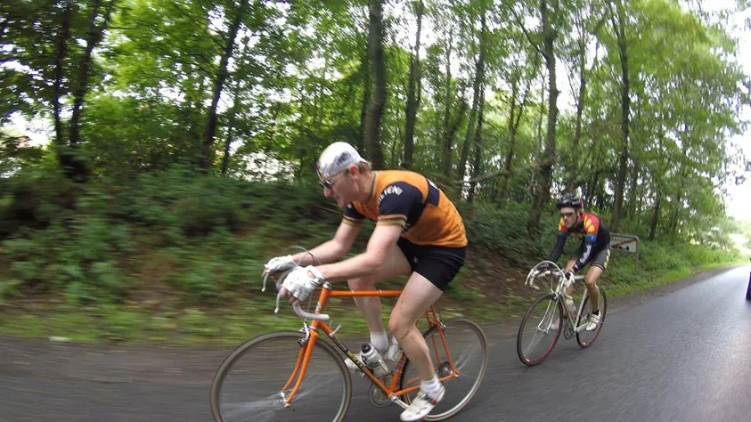
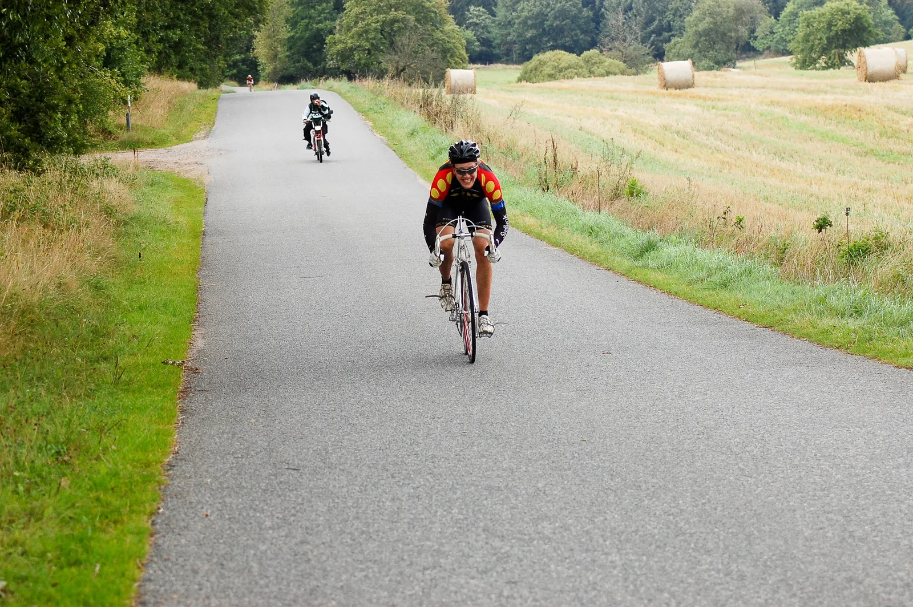
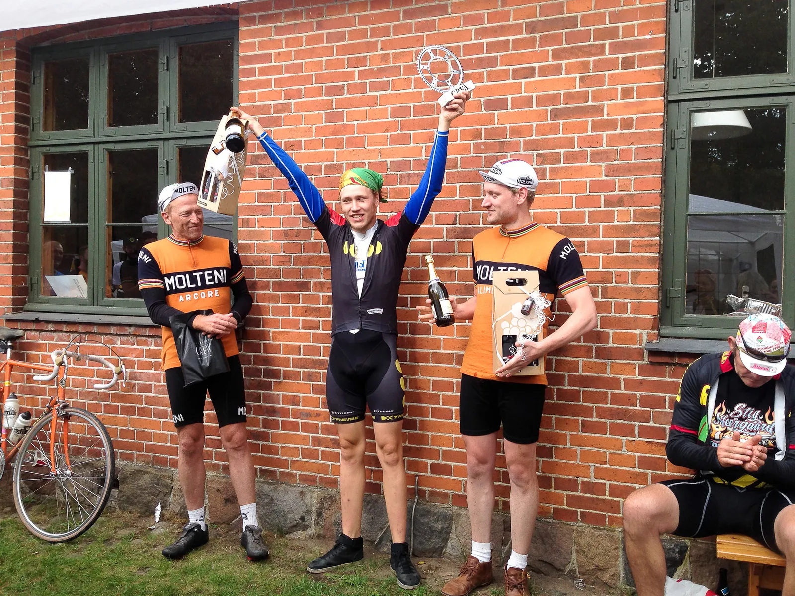

Løbsberetning fra Grand Prix Vejle Ådal 2015

I weekendens Grand Prix Vejle Ådal praktiserede Squadra Molteni Merckx’s velkendte strategi om “la course en tete” – At køre løbet fra spids.
Igen i år blev Grand Prix Vejle Ådal kørt i nogle af danmarks smukkeste omgivelser. Med start ved Bindeballe Station, der også var rammen om de smukke billeder og video fra sidste års løb.

Få kilometer efter løbets start, drøner kaptajnerne Niels Bjørnsteen og Jens Ankerstjerne, med Kasper Sørensen på hjul, blandt de første ind på gruspavéen Nordbækvej.
Med sine sine 3,9 km. er det løbets længste, men ikke den værste.
Team Christianias Hasse Rømer overtager hurtigt taktstokken, og fører feltet an med sit tunge og kontante tråd.

7-Eleven fører an ved Grand Prix Vejle Ådal’s første pavéer
7-Elevens Flemming Kirkegaard blander sig også. Kasper Sørensen ligger som en skygge i deres hjul.
Niels og Jens pakker sig ind lige bagved sammen med de førendes respektive holdkammerater; Jens Christian fra Team Christiania, og sidste års vinder, Jack Petersen, fra Del Tongo – der i dagens anledning havde allieret sig med Flemming fra 7-Eleven.
Det skulle vise sig at blive et mønster i dette Grand Prix Vejle Ådal.
Løbet præges af en del defekter, og Squadra Molteni bliver selv ramt af den første på Nordbækvej, hvor Steffan Sørensen punkterer.
Og efter stærk kørsel helt i front omkring Vork, må Peter Meinert også udgå med mekanisk defekt.
TV-Udbrud til ære for Egtvedpigen
Kaptajn Niels Bjørnsteen brillerer med et par veltimede tv-udbrud på vej mod Egtvedpigens Grav.
På Col de Refsgaard viser Jørn Nielsen fra Bikuben Sønderborg Cykle Klub, hvorfor han sidste år løb med fighterprisen.
Det tynder efterhånden ud i favoritfeltet.
På pavéen Vingsted Skovvej udnytter Hasse Rømer den tekniske nedkørsel til at lave hul, men Kasper er svejset til hans hjul.
Der er samling igen ved Vingstedcenteret.
Førergruppen skrumper
Squadra Molteni er nu reduceret til tre mand; kaptajnerne Niels og Jens samt løjtnant Kasper. Jørn Nielsen fra Sønderborg Cykle Klub må desværre udgå med defekt.
Flemming Kirkegaard tager en flere kilometer lang monsterføring, på den grusbelagte Bindeballesti. Med sin karakteristiske 7-Eleven trikot, og Oakleys ligeså iøjenfaldne briller, tonser han derudaf med over 40 km/t på grusvejen.
Kasper Sørensen, i hans baghjul, har nok at gøre med bare at følge med. På Col de Potkær må sidste års vinder, Jack Petersen, desværre overgive sig til en punktering.
På stigningen viser Team Peugeots nyeste erhvervelse, Pelle Clemmensen, at de to overdimensionerede franske baguettes, der stikker op af hans cykelsko, kan andet end at sprinte.
Han tester gruppens integritet med en hård acceleration. Efter Col de Randbøldal er gruppen på under ti mand.
Uro og ubeslutsomhed blandt de stærkeste
Kasper bliver lidt overmodig med føringerne, og Niels maner ham til ro. Kasper er igen ved at bruge sig op lige før en stigning.
En taktisk veltimet genistreg af kaptajnen, som får stor indflydelse kort efter. Pelle fra Team Peugeot er nu meget aktiv, og animerer sammen med Team Christiania.
Pelle centrifugerer lægmusklerne, og laver en lille splittelse hen mod Engelsholm Slot.
Der er uro og ubeslutsomhed i gruppen.
Kasper kører kontra på Pelles angreb, og får hullet. Han hamrer over den femstjernede pavé, og udnytter sit kendskab til ruten.
Han får et forspring på ti sekunder. Desværre for 7-Eleven, punkterer også Flemming Kirkegaard.
Team Christianias Jens Christiansen sætter sit angreb ind kort efter, men desværre er hans acceleration for kraftig til at Niels Bjørnsteen, eller Jens Ankerstjerne, kan følge ham i jagten på Kasper Sørensen, der nu har et hul på 30 sekunder.

Pelle tager en dingerføring foran i forfølgergruppen de næste fem kilometer.
Kasper kan se Jens Christian nærme sig, desværre med et godt hul til gruppen, hvor hans kaptajner sidder på hjul af Pelle.
Løjtnanten er nu Squadra Moltenis eneste håb
Efter de sidste kontrabakker, fire km. før mål, styrter Team Christianias kaptajn. Han river bomstærke Daniel Dallerup med sig i faldet.
Jens Ankerstjerne og Niels Bjørnsteen undgår styrtet – og kører parløb mod mål.
Foran kører Kasper Sørensen og Jens Christian også parløb. Men efter de sidste bakker, hugger Jens Christian igen med en af sine sylespidse slangehug. I et vildt skrig åbner han op for sluserne, og kører alene i mål som vinder af Grand Prix Vejle Ådal – 500 meter foran Kasper.

En flot sejr!
Squadra Moltenis Jens Ankerstjerne og Niels Bjørnsteen, besætter 3. og 4. pladsen.
Taktisk et perfekt løb af Squadra Molteni.
Desværre satte mekaniske problemer en stopper for storfavoritterne fra 7-Eleven, Del Tongo og Sønderborg Cykle Klub.
